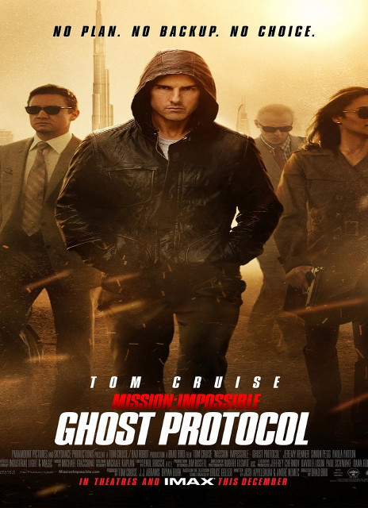

|  |
Mission Impossible: Ghost ProtocolThe IMF is shut down when it's implicated in the bombing of the Kremlin, causing Ethan Hunt and his new team to go rogue to clear their organization's name. |
Mission Impossible: Ghost ProtocolThe IMF is shut down when it's implicated in the bombing of the Kremlin, causing Ethan Hunt and his new team to go rogue to clear their organization's name. |
|
Mission Impossible: Ghost ProtocolThe IMF is shut down when it's implicated in the bombing of the Kremlin, causing Ethan Hunt and his new team to go rogue to clear their organization's name. |